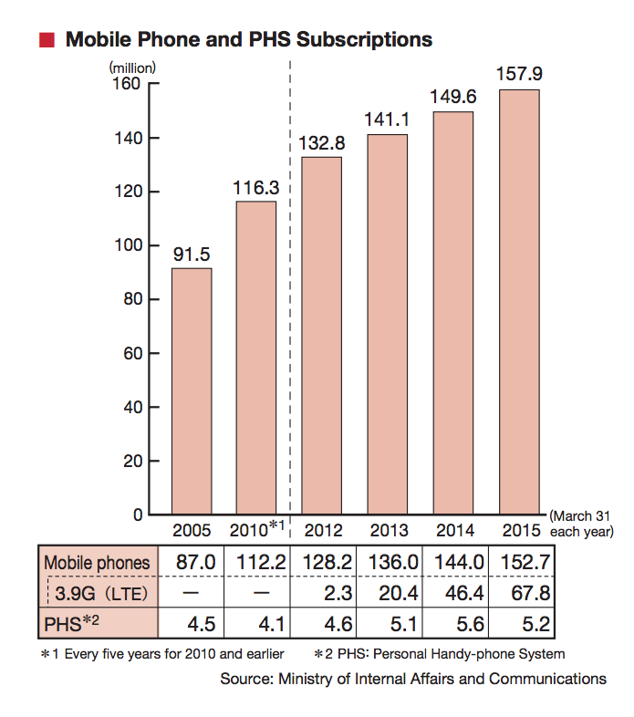
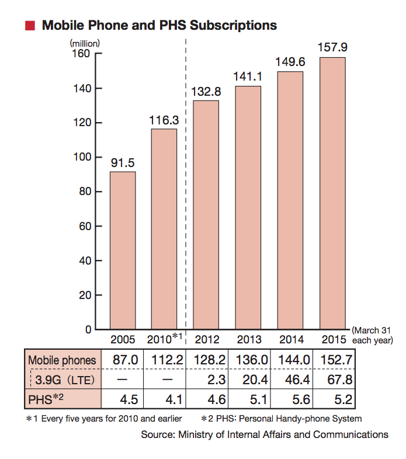
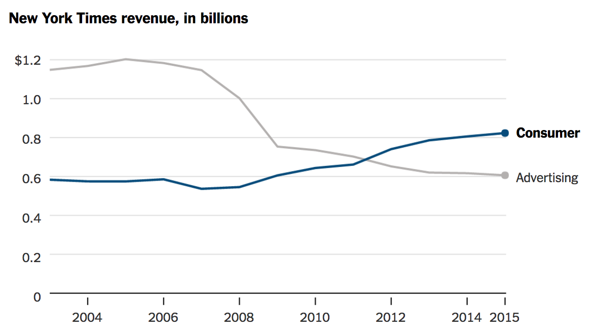
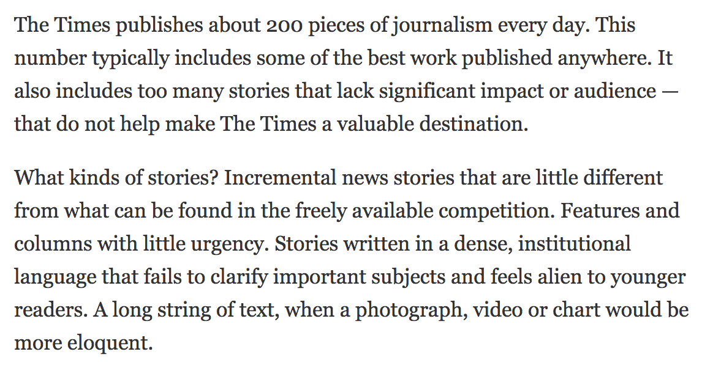

Graphics are journalism, too
AKA...
The role of quantitative and visual journalism in the transition from print-first to digital-first
Contents
• The case for prioritising digital (but not throwing print under the bus)
• Where do data and graphics come into this?
• How to extract the full potential of visual- and data-driven journalism
The case for prioritising digital
• Print is neither dead, or — imo — dying, but it's unarguably on a downward trend

While digital is growing
• Both in terms of internet usage as a whole...

While digital is growing
• Both in terms of internet usage as a whole...
• and smartphones in particular
 

And [digital] social is increasingly readers’ route to your journalism

The New York Times just published a fantastic, detailed report
Among the highlights were:
• The success of its subscription model...
The New York Times just published a fantastic, detailed report
• Importance of visual elements to its future...

The New York Times just published a fantastic, detailed report
• The need to spend less time on minimal-value-added news, more on unique journalism...
The New York Times just published a fantastic, detailed report
• And the need to be smarter and more strict about efficient use of editorial resources

So where do data and graphics come in?
So where do data and graphics come in?
• They’re a great vehicle for differentiation through value-added journalism, and for brand-establishment/consolidation
• When used intelligently, they set you apart from your competitors and minimise the risk of being seen as “just doing what everyone else is doing”
So where do data and graphics come in?
• Readers will come to see them as a core part of your premium product

So where do data and graphics come in?
They present huge opportunities for increasing journalistic efficiency
So where do data and graphics come in?
Data-driven journalism: Using scripts, tools, APIs to automate part of* the process of routine journalism, thus freeing-up reporters’ time to spend on deeper, more complex, more fundamental stories and analysis
* I’m no absolutist. Direct, hands-on input is still crucial, and as more newsrooms go down the automation route, it’s these human touches that will set you apart. Also keeps you close-to the story.
So where do data and graphics come in?
Graphics: A showpiece visualisation that might once have required more than a week’s work or more can now be done to the same exquisite standards by one person in a day or two
So where do data and graphics come in?
Digital storytelling techniques can introduce joy and surprise into your editorial output, increasing its chance of initial success, opening up avenues for new and unintended uses, and driving consistent traffic over multiple years, let alone weeks/months
So where do data and graphics come in?
Graphics and stats are inherently optimised for social
• “A picture speaks a thousand words”
• People love being able to share something which proves a point, debunks a myth etc. Stats and graphics lend themselves perfectly to this
• Social media streams are growing busier and busier. Clear, crisp graphics will stand out in those feeds, and if they tell a clear story or impart a message that taps into people’s emotions, they’ll fly
So what should (and shouldn’t!) you do to get this right?
Use graphics to tell stories. Every news organisation in the world could substantially improve the quality of its visual output without making any more charts. Lose the boring ones, lose those which are simply accompaniments to self-sufficient work. Lose the ones used purely “to break up the text”. Never commission a graphic because “we’ll need a graphic to go with that piece”
So what should (and shouldn’t!) you do to get this right?
Don’t be gratuitous. Resources are scarce, so use them wisely. Sure, try some initial experiments — this work can be very fun! But once you really get started, quantitative and visual journalism needs exactly the same emphasis on speed, concision and editorial function that goes with any piece of traditional journalism
So what should (and shouldn’t!) you do to get this right?
Think about how you can really take advantage of digital tools to bring joy and discovery
So what should (and shouldn’t!) you do to get this right?
Give your visual journalists editorial and creative agency. They and you will benefit enormously. The made-to-order bar chart is no better than the 400 word story that all of your competitors — and 50 other websites — has. It’s a low-value use of a high-value skillset, it does nothing to strengthen your journalism or your brand, and it can be demoralising for those involved
So what should (and shouldn’t!) you do to get this right?
Have fun! Digital opens up a huge range of wonderful possibilities, and can work alongside print to reinforce and grow the reputation and readership of your news organisations. I look forward to seeing all the fantastic work that will doubtless come out of Japanese and other Asian-language news organisations in the near future!
Any questions?
You can reach me on Twitter @jburnmurdoch or by email john.burn-murdoch@ft.com
These slides are at bit.ly/jnpc-data